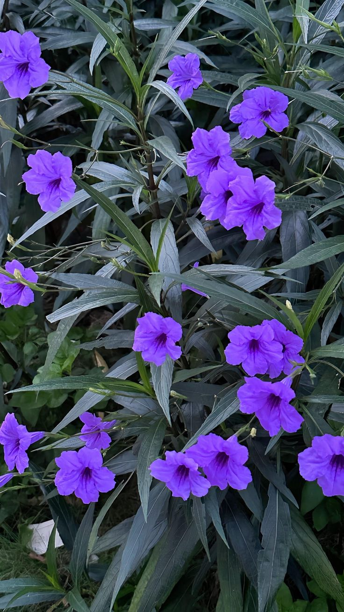

El trompillo suele crecer en terrenos baldíos, suelos cultivados y otras áreas perturbadas. Esta planta es una buena fuente de alimento para la fauna silvestre, por un lado las mariposas y colibríes se nutren con su polen. Luego las aves comen sus semillas.
Tiene un aroma suave y fresco, generalmente ligero.
Necesita bastante iluminación para florecer adecuadamente.
Se recomienda entre 5 y 6 horas de sol directo al día.
Riego moderado, especialmente durante temporadas calurosas.
Dejar secar ligeramente la tierra antes de volver a regar.
Evitar exceso de agua para prevenir pudrición en raíces.
Retirar ramas secas y flores marchitas para estimular nuevas flores.
La poda ayuda a mantener una forma más estética y saludable.
El Trompillo atrae mariposas y polinizadores gracias a sus flores llamativas.
Es muy apreciado en jardines por su floración colorida y abundante.